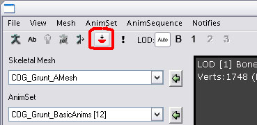
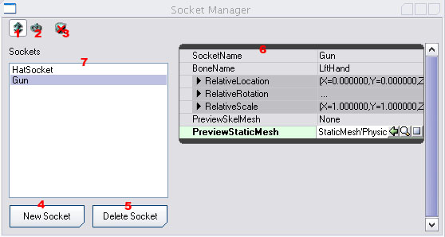

UDN
Search public documentation:
SkeletalMeshSocketsJP
English Translation
中国翻译
한국어
Interested in the Unreal Engine?
Visit the Unreal Technology site.
Looking for jobs and company info?
Check out the Epic games site.
Questions about support via UDN?
Contact the UDN Staff
中国翻译
한국어
Interested in the Unreal Engine?
Visit the Unreal Technology site.
Looking for jobs and company info?
Check out the Epic games site.
Questions about support via UDN?
Contact the UDN Staff
SkeletalMeshソケット
ドキュメントの概要： ゲーム中に他のオブジェクトを接続するために使用できる骨格メッシュに、名前の付いたソケットを追加するためのチュートリアル。 ドキュメントの変更ログ： James Golding により作成。概要
ゲームでは通常、キャラクターのボーンにオブジェクトを接続したいと思われるでしょう。これは、手に接続する武器であることもありますし、頭に接続する帽子であることもあります。UnrealEngine3 によって、SkeletalMesh (骨格メッシュ) の特定のボーンからのオフセットである、名前の付いた「ソケット」をAnimSetViewer (アニメーション セット ビューア) で定義できます。次から、ソケットは、グラフィカルにボーンと関連して配置でき、接続されたStaticMesh (静的メッシュ) やSkeletalMeshのプレビューも得られます。これによって、アーティストは、SkeletalMesh用のソケットを容易にセットアップでき、オブジェクトを接続するソケットの名前をプログラマーに伝えるだけです。ソケットを作成する
まず第一に、AnimSetViewerでソケットを追加したいSkeletalMeshを開けます。次にツールバーの [Socket Manager ] ボタンを押します。:
これにより、Socket Manager ウィンドウが立ち上がります。:
| 1 | 変換モード |
| 2 | 回転モード |
| 3 | すべてのソケット プレビュー メッシュをクリアする |
| 4 | 新しいソケットを作成する |
| 5 | 選択されたソケットを削除する |
| 6 | 選択されたソケットのプロパティ |
| 7 | ソケット リスト |
 ソケット マネージャでソケットを選択すると、ウェジットを使用して、望みの位置にソケットを変換したり回転したりできます。RelativeScale フィールドを使用してソケットのスケーリングを修正する以外にも、ソケット プロパティを使用してマニュアル操作で位置と回転を調整することもできます。
ソケット マネージャでソケットを選択すると、ウェジットを使用して、望みの位置にソケットを変換したり回転したりできます。RelativeScale フィールドを使用してソケットのスケーリングを修正する以外にも、ソケット プロパティを使用してマニュアル操作で位置と回転を調整することもできます。
ソケット内のメッシュをプレビューする
キャラクターの手で何かを調整しようとするときなど、ソケットを操作するときにソケットに接続された実際のメッシュを見ることが望ましい場合が非常によくあります。ソケットのプロパティには、PreviewSkelMesh および PreviewStaticMesh と呼ばれる ２ つのフィールドがあります。汎用ブラウザを使用して、プレビューに使用するために使用したいメッシュを選択し、次に、関連するフィールドを選択し、緑色の[Use] 矢印ボタンを押します。ソケットに接続された 3D ビューポートにメッシュが現れるのが見えます。プログラマー向け
ゲーム中にソケットを使用する
SkeletalMeshに対してソケットがいったん作成されると、別のコンポネントを接続するため、 UnrealScript で使用できます。次が例です。:MySkelComponent.AttachComponentToSocket(NewComponent, `SocketName');SocketName は、AnimSetViewer を使用してソケットに与えた名前です。その後、NewComponent (新しいコンポネント) が、キャラクターが動くにつれて更新されます。また、以下のようにしていつでもワールド スペースにソケットの位置を見つけることができます。:
var vector SocketLoc; var rotator SocketRot; MySkelComponent.GetSocketWorldLocationAndRotation(`SocketName', SocketLoc, SocketRot);